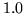
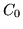

To augment the spectral parameters derived from linear prediction or
mel-filterbank analysis, an energy term can be appended by including the
qualifier _E in the target kind.
The energy is computed as the log of the signal energy, that is, for speech
samples

This log energy measure can be normalised to the range by setting the Boolean configuration parameter ENORMALISE to true (default setting). This normalisation is implemented by subtracting the maximum value of in the utterance and adding . Note that energy normalisation is incompatible with live audio input and in such circumstances the configuration variable ENORMALISE should be explicitly set false. The lowest energy in the utterance can be clamped using the configuration parameter SILFLOOR which gives the ratio between the maximum and minimum energies in the utterance in dB. Its default value is 50dB. Finally, the overall log energy can be arbitrarily scaled by the value of the configuration parameter ESCALE whose default is .
When calculating energy for LPC-derived parameterisations, the default is to
use the zero-th delay autocorrelation coefficient ( ). However, this means
that the energy is calculated after windowing and pre-emphasis. If the
configuration parameter RAWENERGY
is set true, however, then energy is calculated separately before any windowing
or pre-emphasis regardless of the requested parameterisation5.6.
). However, this means
that the energy is calculated after windowing and pre-emphasis. If the
configuration parameter RAWENERGY
is set true, however, then energy is calculated separately before any windowing
or pre-emphasis regardless of the requested parameterisation5.6.
In addition to, or in place of, the log energy, the qualifier _O can be added to a target kind to indicate that the 0'th cepstral parameter  is to be appended. This qualifier is only valid if the target kind is MFCC. Unlike earlier versions of HTK scaling factors set by the configuration variable ESCALE are not applied to 5.7.